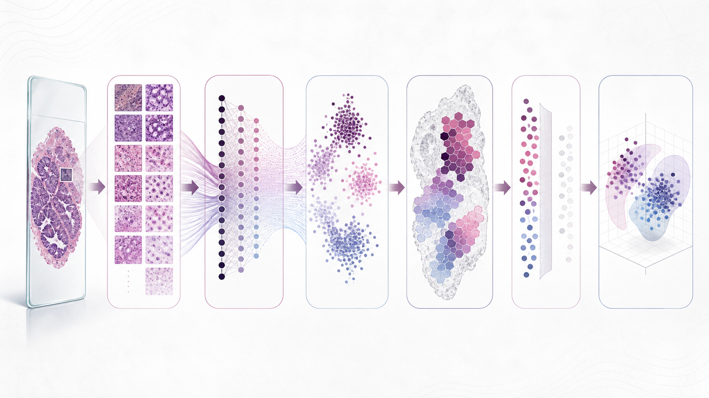
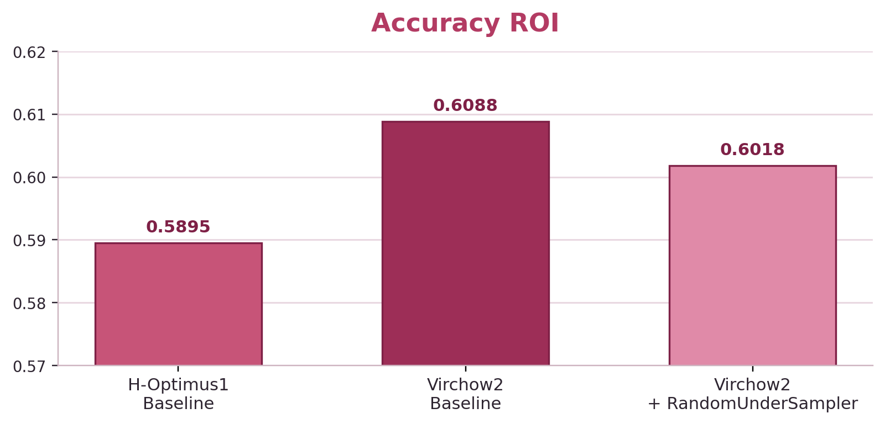
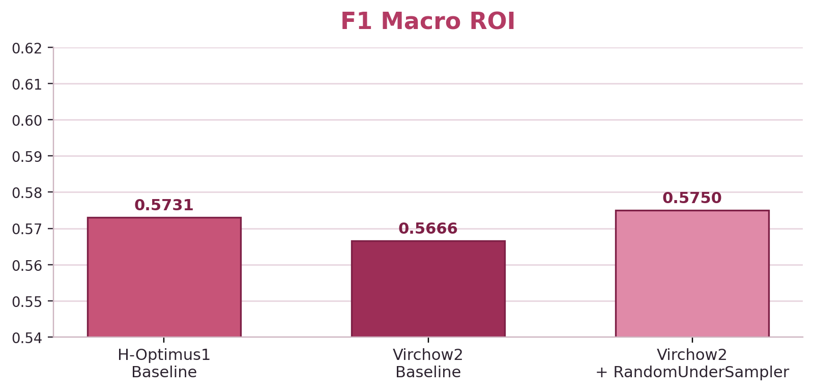
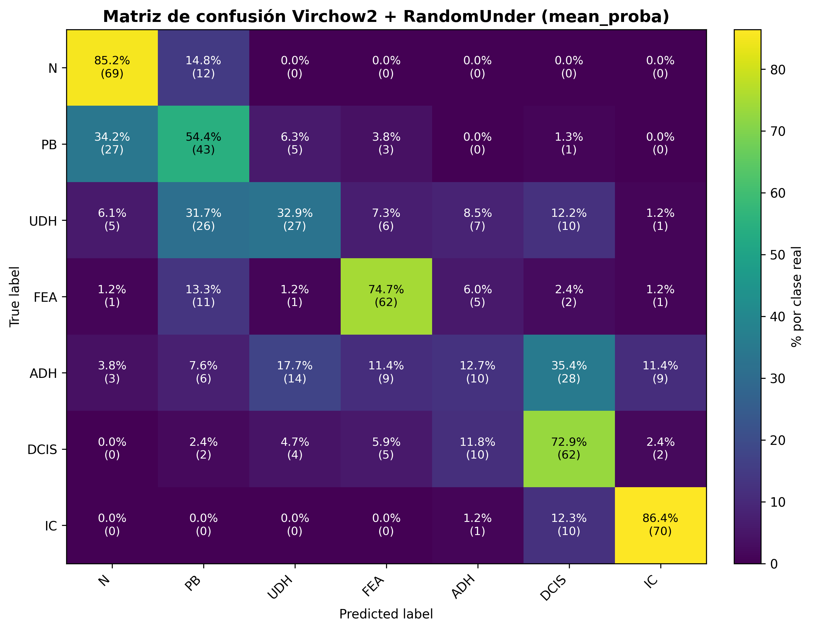

El problema
Las imágenes histológicas de mama contienen lesiones de distintas categorías, incluidas formas intermedias que resultan difíciles de diferenciar. El objetivo de este TFG fue estudiar cómo el preprocesamiento y los modelos de aprendizaje profundo afectan a la clasificación en el conjunto BRACS.

Cómo lo abordé
Preparé los datos en parches y comparé CNN, Vision Transformers y modelos fundacionales de histopatología. Después estudié la selección de parches, la agregación de predicciones por región de interés y los casos en los que el sistema mostraba mayor incertidumbre.

Resultados destacados
En la evaluación de test a nivel de región de interés y siete clases, la mejor accuracy y el mejor F1 macro se obtuvieron con configuraciones distintas de Virchow2. Ambas emplearon la media de probabilidades de los parches.
F1 macro: 56,66 %
Accuracy: 60,18 %


Al agrupar las siete subclases en tres categorías clínicas, Virchow2 + baseline obtuvo un 77,89 % de accuracy y un 76,73 % de F1 macro. Esta proyección reutilizó las probabilidades de las siete clases; no se entrenó un modelo nuevo de tres clases.
Entender los errores

El análisis muestra que varias confusiones se concentran en categorías intermedias. Estudiarlas fue tan importante como comparar las métricas globales.
Trabajo académico de investigación sobre BRACS; no se trata de una herramienta clínica validada.